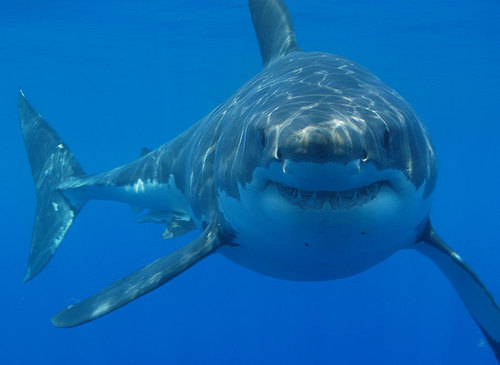

What are the coldest or hottest places where life can exist?
How deep can you go in the sea before you do not find anything living anymore?
Are there living organisms on top of the world's highest mountains?
How can you tell if something is alive or if it was never alive?
What do organisms need to stay alive?
How come some organisms can live in certain places while others cannot?
Let's start exploring the world around us and how it works! Remember that this is your book! You must use it to explore and ask questions about the world around you, and also to learn about yourself and who you are. Do not be afraid to take notes in the margins of this book - make your own scribbles and notes to yourself about points to remember or questions you would like to ask. Be curious! Explore and imagine the possibilities of what you can do with science!
What is the biosphere?
atmosphere
biosphere
depend
environment
habitat
microorganism
organism
All the 'New words' listed in the boxes in the margin are defined in the glossary at the end of this strand.
Have you heard the word 'sphere' before? Do you know what it means? A sphere is normally used when talking about a round shape (like a ball). Now, what do we mean when we talk about the biosphere? The prefix 'bio-' indicates something to do with life. For example, 'biology' is the study of living organisms. So, can you put these two meanings together to work out what 'biosphere' means?
The biosphere is the place where life exists on planet Earth. When we talk about the biosphere, we are talking about a huge system (the whole world!) and how all the different parts work together to support life. We will look at these different parts in more detail a bit later.
The first person to use the term 'biosphere' was the geologist Eduard Suess in 1875 when he wrote a definition for the biosphere as 'the place on Earth's surface where life dwells.'
The biosphere is where life exists on our planet, including the soil and rocks, water and air.
The 'Visit' boxes in the margins contain links to interesting websites and videos. Simply type the link exactly as it is into the address bar in your browser.
We can also use the term biosphere in different ways. When we speak of all life on Earth as it interacts with the non-living rocks and soil, water and air (atmosphere), we call this the biosphere.
Biosphere 2 is a man-made research centre in America, in the Arizona desert, where scientists have built a large enclosed artificial biosphere.
Learn more about Biosphere 2, a fascinating ongoing project to maintain a man-made biospherebit.ly/18cwCth
We can also call a specific part or region on Earth that supports life, a biosphere, especially when we refer to the living organisms and the environments in which they live.
Where do you think life exists on Earth ?
INSTRUCTIONS:
The following table contains some photos of different places on Earth. Describe what each photo is showing.
Then decide if you think life exists there or not. If you do think so, list some of the organisms which you think live in this place.
Aplace on Earth
What is this image showing?
Do you think there is life there? If so, what?
Aplace on Earth
What is this image showing?
Do you think there is life there? If so, what?
Adesert with rocks, some mountains and grass.
Yes, life exists here.
Organisms include:
snakes
birds
grasses
cacti
insects
possibly buck, jackal, hares, etc
possibly humans (this is actually a photo from Namibia)
Amountain range covered in snow.
Yes, life exists here.
Organisms include:
trees (seen at bottom of photo)
possibly bears, snow leopards, rabbits, etc
possibly humans
The sky with clouds and some birds.
Yes, life exists here.
Organisms include:
birds
insects
Soil with grass growing on top.
Yes, life exists here.
Organisms include:
plants (grasses and other shrubs)
insects
earthworms
microorganisms
After doing this activity, did you see that life exists everywhere on Earth? From the highest mountains to the deepest oceans, from the hottest deserts to the thickest jungles, there is life. Did you also notice that when describing the places on Earth where life exists, you used words such as soil, rocks, water, air? These are all part of the biosphere and have special names.
Components of the biosphere
adapt
aquatic
component
hydrosphere
lithosphere
marine
matter
organic
photosynthesis
respire
In the previous activity we saw that life can be found in water, soil and rocks or the air around us. These components form part of the biosphere and have special names:
Lithosphere which includes the soil and rocks.
Hydrosphere which includes all the water.
Atmosphere which includes all the gases.
The biosphere includes the lithosphere, hydrosphere and atmosphere. The biosphere includes all living organisms, and also dead organic matter.
Describe the components of the biosphere
INSTRUCTIONS:
Study the following photo that shows the components of the biosphere.
Identify and describe the elements of the lithosphere, hydrosphere and atmosphere that you can see in the photo.
The lithosphere, hydrosphere and atmosphere on Earth.
Lithosphere:
There are rocks. They are hard, sharp, porous in places, eroded by water. There is sand. It is grainy, rough, contains many small pieces of shell and rocks.
Hydrosphere:
This is the seawater and sea spray. Some learners might mention the water vapour that evaporates from the sea. The water is clear and fast flowing, the sea water tastes salty, the sea foam forms on top.
Atmosphere:
This is the gases. The air includes gases such as oxygen, carbon dioxide and nitrogen. Atmospheric gases are not visible, but the sky looks blue.
Even though you cannot see living organisms in this photo, there are many living and dead plants and animals that could live on a beach such as this one. Make about 10 plausible (believable) guesses of the types of organisms which would live in this environment. (Hint, think about what might be living in the sea, sand or air.)
Learner-dependent answer. Learners should be able to imagine for example dolphins swimming in the water, or snails or mussels on the rocks, seaweed in the water and perhaps microbes in the sand. Other organisms could be: crabs, sea gulls and other birds, many types of fish, sharks and whales out at sea, corals, anemones, etc.
Different organisms can exists in different places in the biosphere. Let's have a look at the different components of the biosphere and which types of organisms exist there.
Atmosphere
The atmosphere is the layer of gases that surrounds the Earth. The three most important gases in the atmosphere are nitrogen, oxygen and carbon dioxide. The atmosphere is made up of several layers.
The Earth's atmosphere has changed over time. Our oxygen rich atmosphere was formed by algae millions of years ago.
The atmosphere
Learners do not need to know the layers of the atmosphere - this will be done in more detail in Gr. 9 Earth and Beyond. The focus of this activity is to show that the atmosphere is actually a very wide layer around the Earth, but life only exists at the bottom near to the Earth's surface where their requirements for life are met.
QUESTIONS:
Discuss with your partner whether you think organisms could live on Earth without the atmosphere. Explain why you think so.
This questions is deliberately included to elicit debate. Without the atmosphere life as we know it would not be possible. The oxygen and carbon dioxide in the lower layers of the troposphere (that touches Earth) allow life to exist as organisms can respire and plants can photosynthesise. The atmosphere also helps to keep the Earth warm by trapping solar energy. The atmosphere protects life from too much UV radiation from the Sun. Earth is the only planet in our solar system that can support life, due in part to our atmosphere.
The hydrosphere consists of all water on Earth in all its forms.
The water cycle
This acts as a revision of some of the previous work done on the water cycle and states of matter and links this to different aquatic habitats for organisms.
INSTRUCTIONS:
Study the following diagram describing the water cycle on Earth.
Answer the questions that follow.
QUESTIONS:
Do you remember learning about the different states of matter? The hydrosphere includes all water in all the states of matter. Look at the diagram of the water cycle and identify water in the different states of matter.
Water is a liquid in the sea, dams, river, rain and dew.
Water is a solid as snow on the mountains (or in hail).
Water is a gas as water vapour in the air.
The water cycle shows different sources of freshwater and saltwater. Many plants, animals and microorganisms have adapted to live in an aquatic habitat. A very small percentage of the world's water sources are freshwater and the rest is saltwater. Write down as many different types of aquatic habitats that you can think of where different organisms exist.
Aquatic habitats include: rivers, dams, lakes, ponds, marshes, estuaries, groundwater and aquifers. There are many different aquatic habitats in the sea, such as rocky shorelines and rock pools, deep water and polar ice caps.
The word 'aquatic' is used to describe something to do with water. Therefore aquaticanimals are animals that live in or near water. The wordmarinedescribes organisms that live in saltwater or the sea. So someone studying the organisms in the sea is called a marine biologist.
Lithosphere
Learners will look at the lithosphere in much more detail in Gr. 9 Earth and Beyond, where they will look at the rock cycle as well as mining in South Africa. This is meant as an introduction and the focus should be on how organisms interact with the lithosphere.
As we have said, the lithosphere includes the rocks, soil and sand on Earth. Organisms depend on the lithosphere in many different ways. We find out how in the next activity.
How do organisms depend on the lithosphere?
INSTRUCTIONS:
Below are several photos depicting different ways that organisms depend on and interact with the lithosphere.
Use these images to write a paragraph about how different organisms depend on the lithosphere in different ways.
Bird nests A rock pool A termite mound A tree growing in the ground
A frequent misconception is that plants get larger and grow because of nutrients they absorb from the soil. However most of the organic mass from any plant is from carbon dioxide that is captured during photosynthesis and used to make organic molecules. It is important to stress that the main nutrient obtained from the soil is water, and relatively small amounts of minerals. If plants 'took up' the actual soil then one would expect it to be depleted and there would be large craters around every large tree!
An earthworm in soil A mud hut
Some of the things which learners could note are:
Animals live in parts of the lithosphere, such as earthworms which live in the soil, ants which make their nests out of sand. Many microorganisms live in soil.
Some birds make their nests on rocks and also use sand to make the nests.
Most plants and trees need soil to grow in. They absorb water and minerals, and use the soil to anchor their roots.
Rocks form rock pools on the shoreline. Rock pools are homes to many different organisms.
Humans use mud and stones to build houses and other buildings.
We have now looked at the different parts of the biosphere and seen that there are many different types of organisms that exist. Each of the organisms that we have seen so far needs to be able to stay alive in those specific conditions. We say they need to adapt to live in their particular habitat. What does it mean to stay alive though?
Characteristics of living plants and animals
This was first introduced in Gr. 4 Life and Living and then also revised in Gr. 5 and 6.
There are seven processes that all living organisms perform that determine whether they are alive or not. Let's have a look at the seven life processes:
All living things need to be able to move. Moving does not have to consist of big movements. Even plants move, for example as the flowers and leaves turn to face the sun during the course of the day.
All living things need energy to perform the life processes. Organisms release energy from their food by a process called cellular respiration.
All living things need to be sensitive to their environment. Think of an example of why animals need to sense their environment and write it down below.
All living things need to be able to grow.
All living things need to be able to reproduce so that they do not die out.
All living things need to be able to excrete waste.
All living things need nutrition, as they need to break down nutrients during cellular respiration to release energy.
Now that we can determine whether something is living or not, we can take a look at what living things need to survive. In other words, what are the requirements for life?
Requirements for sustaining life
favourable
requirement
sustain
After studying the seven life processes, we now know what animals, plants and other living organisms need to do in order to be classified as living. In order to stay alive these living organisms require (need) certain things or specific conditions. In this section we are going to study the requirements necessary to sustain life.
'Sustain'means to keep things alive or in existence. We also use the word sustainable when we want to say that something can continue or be continued for a long time.
Identify the requirements for sustaining life
The answers to this activity are summarised in the subsequent text. In order to get learners to first think about the answers and discuss them without just reading them up in the text, perhaps get them to first take notes in a separate notebook or on scrap paper and have the class discussion before opening the workbooks and allowing them to then take down some notes.
Imagine that you are the design team for the first International Moon Space Station, similar to the International Space Station already orbiting Earth, but situated on the Moon!
The international space station that orbits Earth, seen from above.
Find out more about life on the International Space Station as astronauts perform their everyday tasks.bit.ly/178CXVe or bit.ly/1cfDcF7
INSTRUCTIONS:
Work in groups of four.
What do you think the astronauts and plants living on the new Moon Station will need in order to live? Discuss the five most important requirements that you need to provide in order for the astronauts and plants to remain alive on your Moon Space Station.
Explain why your group chose these five requirements as the most important to sustain life. Write down your notes from your group discussion on the lines provided. Decide which member of your group is going to report back your findings to the rest of the class.
Have a class discussion after you have finished discussing this in your group.
Learner-dependent answer
When groups are finished discussing their most important requirements, let groups share their lists with the other groups and have a class discussion. List their answers on the board and make a tick for each one that is repeated - for example Food/ Oxygen/ Water might be repeated so each time it repeats make a tick next to it. This way they will quickly be able to see which requirements are most commonly repeated in the class. Learners might identify 'Food' rather than energy. Remind them that they also have to think about the plants which do not need to eat food. So ask the learners what term they could use as a more general term for food? This links back to nutrition in the seven life processes. The answer is that living things need a source of energy. If learners do not come up with the fact that living things need 'favourable/good/optimal temperatures', ask them some leading questions such as: 'Do you think the space station needs to be heated or cooled? Why? Will
the humans and plants be able to survive at the temperature it is on the Moon? ' etc.
Living organisms require certain conditions or things to be able to stay alive. We say that these things or conditions sustain life.
You would have discussed some of these requirements in the last activity. Did you come up with the same or similar requirements? Living organisms require the following to survive:
energy
gases
water
soil
favourable temperatures
Next, we look at these in a bit more detail.
Energy: All living organisms need energy to stay alive and perform the life processes. Plants need energy from sunlight in order to photosynthesise. Other organisms get their energy from the food that they eat.
All living things need a source of energy. The grass and trees get their energy from the Sun to photosynthesise. The cow gets its energy by eating the grass.
Gases: All living things require oxygen for cellular respiration. Oxygen is used to release energy from nutrients and carbon dioxide and water is produced as a waste product of respiration. Green plants also need carbon dioxide to photosynthesise.
Ask your learners what they think makes Earth's atmosphere unique. Answers: Our atmosphere contains the right gases to sustain life (ie. oxygen and carbon dioxide), our atmosphere also protects us from the harmful rays of the Sun (such as UV rays) by absorbing some of them.
All living things need oxygen to respire, such as this dog which is breathing air in through its nose.
Water is vital to life. Every organism on our planet needs water to live.
Water is vital for life on Earth.
When astronomers search for life outside of our solar system, they search for planets that might contain liquid water, believing that where there is water there may be life.
Soil sustains life on Earth. Most plants depend on soil for support, minerals and water. Without the soil, plants would not be able to produce the food that animals and other organisms depend on.
Most plants need soil to grow in.
Not all plants need to grow in soil. Epiphytes, such as mosses and orchids, are a group of plants which grow on other plants or rocks. They get their moisture and minerals from the air and rain.
Favourable temperatures: All organisms are adapted to live in a particular temperature. In general, our planet has favourable temperatures to support life. Earth is at an optimal distance from the sun so that it is not too hot, like on Mercury, and not too cold, like on Neptune.
In Natural Sciences, when we use the word 'favourable' we mean something that is advantageous, helpful, or optimal. For example, we can talk about favourable conditions for life.
Every solar system has a 'Goldilocks' zone which is a region that is not too hot (close to the sun), and not too cold (far from the sun) to be able to sustain life. Earth is in the middle of our solar system's Goldilocks zone!
Let's find out what the requirements are to grow seedlings. We will learn how to conduct a scientific investigation to do this.
In previous grades learners were required to complete a similar investigation to determine the optimal requirements for seeds to grow. CAPS suggests that they do this activity again in order to reinforce the concept of the requirements to sustain life. Teachers should gauge how many learners did this particular activity in previous grades and should explain that this repetition is not so much to find out what requirements are necessary to sustain life, but to give them an opportunity to learn how to conduct a science investigation. This has therefore been included again as a very good opportunity (with learners already aware of the outcome) to review the scientific method and allow learners to practise this.
dependent variable
hypothesis
independent variable
scientific method
variables
What are the requirements to sustain life in plants?
Start growing seedlings at the beginning of the term in the first lesson. A suggestion is to break the class up into groups and assign each group a different requirement to investigate. For example, one group should test whether water is needed, one group should test whether light is needed, one group should test the favourable temperature. Each group should also conduct a control so that they can all attempt to get seed to germinate.
In this investigation, we are going to germinate bean seeds (or any other seeds that your teacher provides you with). Each group in the class is going to be testing a different requirement for germination and growth of the seedling.
A hypothesis is an educated guess about what the outcome of the investigation will be. The hypothesis is stated before starting the investigation and must be written as a statementand must be in the future tense.
AIM:
A scientific investigation always has an aim or question that needs to be answered. What is the aim of this investigation? Write down what you aim to find out.
'To find out what plants need to grow'. (An aim MUST start with 'To find out / To determine / To see if .. etc. This is different from a scientific question like 'What do plants need to grow?')
HYPOTHESIS:
A hypothesis is where you propose (suggest) what the outcome of the investigation will be. It is a prediction of what the results will be. Write a hypothesis for this investigation.
Learner-dependent answer. The hypothesis should include a prediction about the need for soil, light, water and the favourable temperature. For example: 'The plant will grow best in full sunlight, less in the shade, and not at all in full darkness.'
VARIABLES:
Scientists often use investigations to search for cause and effect relationships. This means that they design experiments to investigate how changes to one part will cause an effect on another. These changing quantities are called variables. There are usually three kinds of variables:
Independent variables: This is the thing that you are changing in the investigation. You are in control of the independent variable. For example, if you wanted to investigate if eating a lot of sugar makes you gain weight, then the amount of sugar you eat is the independent variable. You control how much sugar you eat. We want to achieve something called a FAIR TEST which means that only ONE independent variable is changed at one time. Once the independent variable has been changed the scientist then observes what the effect will be. In the example of investigating if sugar makes you gain weight, you cannot at the same time investigate whether exercise makes you lose weight. This would not be a fair test.
Dependent variables: The dependent variable is the thing that you observe in an investigation. You do not change it. The dependent variable will change depending on the independent variable. For example, in the investigation to see if eating a lot of sugar makes you gain weight, then the dependent variable will be how many kilograms you gain (or lose) as a result of eating sugar. How much weight you gain depends on how much sugar you ate. Dependent variables should be measured in an objective way using numbersas far as possible.
Controlled variables: These are the quantities that a scientist wants to remain the same or unchanged throughout the experiment. The controlled variable needs to be carefully monitored to make sure that it stays the same. In the example to see if sugar makes you gain weight, you could have one person eat a lot of sugar and the other person eat no sugar and then see the changes in weight. There are some things that need to stay the same for both of these people so that it is a fair test. For example, both people must do the same amount of exercise so that this does not influence their weight. This is a controlled variable.
Stress to the learners that dependent variables should be measured using NUMBERS as far as possible, as this leads to tables and graphs. They should avoid subjective evaluations like it 'looks good' or 'feels nice'. This is not science.
Ask learners if they can think of any other variables that need to be kept the same in this example. They might think of things like the starting weight of the people should be the same, they should be the same sex, same age, they should both be healthy and not sick etc.
You can also do a control test. For example, in this investigation about the growth of plants, you will be taking away one of the requirements for growth. You need to do a control test where another plant is given all the requirements, including the one you took away in the other plant. You can then compare your plant where you took one requirement away to the control plant which has that requirement to see if there is a difference.
You, the teacher, can decide how you want to conduct this investigation. Perhaps learners can just assess whether it germinates or not, or they can look at how tall the plant grows, how many leaves it grows, etc. In most cases, the seeds probably will not germinate and grow if put in a cupboard or fridge or not given any water. So the best test is just to see whether it germinates or not.
Identify the variables for this investigation.
Independent variable. What will you change?
Learners need to explain that they will only change one factor, i.e. remove light from the plant (by putting it in a dark cupboard) or remove water (by not watering it), while keeping all the other factors constant.
Dependent variable. What will you measure to see the effect of the independent variable on the germination and growth of the plant?
Learner-dependent answer
Controlled variables and control group. What will your control test be and what will you keep the same between the control plant and the tested plant?
Learners need to explain how they will keep the other factors the same in each case but only change one at a time. It is important that learners understand and reflect on having a control group that has all the necessary factors/requirements to allow it to grow. We suggest that more than one control group be included.
The above questions give learners the opportunity to reflect on their variables and control groups. As Gr. 7s might not have had a chance to work with these concepts it is imperative that you spend time explaining why a control group is required and why only one variable be changed in each of the plants. Use the above example of testing whether eating too much sugar makes you put on weight, so that learners can then apply what you discuss about the example to this investigation.
Remember you control group is a special kind of comparison group.
METHOD:
In your group, plan how you are going to do the investigation. Think about which requirement you are testing and how you will take this requirement away. For example, if you are looking at light, where could you place the seeds so that they do not receive light? Remember, if you are looking at light, then you need to make sure the control and test seeds both receive the same amount of water. Once you have planned the investigation on rough paper and discussed it with your teacher, write up the method below (in numbered steps) explaining what you will do.
As groups are discussing their design, go around and check that they are on the right path and discuss it with them and provide help. Help learners to find ways that they can test the requirement, especially if they are looking at a favourable temperature. Perhaps you have a fridge that learners could put the seeds in? (However, remember to take into account whether the plants will receive light in the fridge). Find a suitable spot in the classroom for the control group plants, perhaps on a windowsill with light. How many seeds will the learners use for each experimental condition? Is one seed enough? What can go wrong if only one seed is used?
A suggestion is to give learners some options for materials for germinating the seeds. For example, they could either use cotton wool, or newspaper, or soil. But, whatever they use, it must be the same in the control and test plants within one group. It does not matter if different groups do different things. This should actually be encouraged.
Learners also need to think about how they are going to record their results before starting the investigation. If they are just seeing whether plants germinate or not, then perhaps they can draw a table. If they are going to be measuring how much the plants grow, then they will need a table for this, and they will then need to draw a graph. If they are measuring the growth of seedlings, a suggestion is to use string to measure out the height, and then to measure the length of the string on a ruler.
MATERIALS AND APPARATUS:
Write a list of all the materials and apparatus that you will be using in this investigation.
Learner-dependent answer
RESULTS AND OBSERVATIONS:
Use this space to record the results for your investigation. If you are seeing whether plants germinate or not, then you need to draw a table to show this. If you are measuring how much the plants grow, then you will also need a table for this.
Learner-dependent answer. (Some examples of the types of tables learners can draw are shown below. They might need help with this and you could draw these on the board. Learners could also record the results of each other's investigations as well.)
Table to show whether plants germinated or not
Requirement being tested
Did test plants germinate?
Did control plants germinate?
Light
Some did.
Yes
Water
No
Yes
Favourable temperature
No
Yes
If the learners have included a number of seeds in each test group/ condition, they may want to express the result as numbers rather, or as a percentage of seeds that germinated.
Table to show growth of seedlings over time in light and in dark
Day
Average height of seedlings in dark (mm)
Average height of seedlings in light (mm)
0
0
0
1
0
2
2
0
5
3
1
10
4
2
15
5
3
22
6
3
30
ANALYSIS:
Once we have collected our results in a scientific investigation, we need to analyse them. This often involves drawing a graph. If you measured the growth of the seedlings over time, then you can draw a line graph to show this. If you have counted the number of seeds that germinated you can express this using a bar chart (provided you used the same number of seeds in each group), or you can express the percentage of seeds that germinated as a pie chart. Your teacher will help you do this.
Learner-dependent answer. An example of the type of line graph which could be drawn, using the information in the second table is given below. Time will be along the independent x-axis. The height of the plants is the dependent variable and this goes along the y-axis. Both the test plants and the control plants can then be plotted on the same graph to compare the growth between the two groups. Ensure that the intervals are equal along each of the axes. On each axis the interval between points must represent an increase of the same amount! (E.g. 0, 5, 10, 15, 20, 25 etc. ) However, the intervals on the x-axis and the y-axis can be different in order to suit the data. For example you may use an interval of 1 on the x-axis to represent number of days, but an interval of 5 mm on the y-axis to represent change in height.
CONCLUSION:
After collecting all your results and drawing a graph using these results, you will need to use this to draw a conclusion about the requirements to sustain life in plants. The following questions will guide you in drawing your conclusion.
I found out...
Learner-dependent answer.
I know this because...
Learner-dependent answer.
The investigation was fair because...
Learner-dependent answer.
I can trust the results because...
Learner-dependent answer.
While I conducted (did) this investigation I also discovered that...
Learner-dependent answer.
If I did this investigation again I could improve it by...
Learner-dependent answer.
What did you learn from doing this scientific investigation?
Write 3 to 5 sentences explaining what you learnt from doing this scientific investigation following the scientific method.
Each organism is able to survive and continue to survive in their environment because they have acquired the characteristics that allow them to do things in a special way in their particular environment. We say they have adapted to life in their particular type of environment.
Learning about adaptations is a precursor to an understanding of the concepts of natural selection and evolution which will be introduced later in the term. Make sure that learners understand that organisms cannot will their bodies to change or learn to survive in a particular environment in a single generation (lifetime). These adaptations take place over many generations as a result of natural selection, in which organisms who are better adapted to their environment are more likely to thrive and have lots of off-spring. These offspring will have the genes of the parents, and will inherit the characteristics (adaptations) that made the parents better able to survive. Teachers do not need to go into any detail about natural selection yet, but should make sure that the learners are not under the impression that any organism can 'decide' to acquire an adaptation.
Adapted for life
Do you think you could put a polar bear in the Kalahari desert or a gemsbok in Antarctica and they would survive? Why, or why not?
Discuss this with your learners. If you put a polar bear in the Kalahari desert, it would overheat, and similarly if you put a gemsbok in Antarctica it would freeze to death.
These animals are specifically adapted to live in their specific environments. All organisms are adapted to their specific environments. In the next activity we examine some more examples of how organisms are adapted to their environments.
Adaptations in organisms
INSTRUCTIONS:
Study the photos below showing different organisms in different environments.
Answer the questions.
You might need to do some extra research in books and on the internet to complete your answers.
QUESTIONS:
Look at the photos of a penguin in the water and an eagle flying in the air. Both of these are birds, but they live in very different environments that make the penguin adapted for the water and the eagle adapted for flight.
A penguin in the water. A flying fish eagle about to catch some food.
How do you think the penguin is adapted to swim in water? Hint: What are its wings used for? Does it have small or large feathers? How do you think this helps?
The penguin is adapted to swim in water as it uses its wings as flippers to swim. The feathers are very small/fine which help make it waterproof.
Some additional adaptations to discuss: Penguins are able to hold their breath and dive deep underwater to catch food. Penguins are black and white which helps them to be camouflaged in the water and hide from predators (They look dark like the water from above, and light like the sky from below). Penguins have even adapted to drink salty sea water.
How do you think the eagle is adapted to fly and catch its prey? Hint: Look at its feathers and wings.
Fish eagles have very long wings and long feathers to enable flight and to be able to soar in the air and then swoop down and catch prey.
Some additional adaptations to discuss: They have long talons/claws so that they can catch their food as they swoop down and grab it. They also have large tail feathers that they can fan out to help them control their speed when flying.
South Africa is home to two very skilled predators, the great white shark and the lion. Both of these animals are very skilled at catching their prey, but in very different environments.
A great white shark in Gansbaai, Western Cape. A lioness attacking a buffalo in Kruger National Park.
What characteristics does the shark have that makes it adapted to living and feeding in the sea? Hint: Look at its streamlined body shape and sharp teeth.
The great white shark is adapted to move very fast through the water as its body is streamlined and it has fins and a tail to swim. It has sharp teeth to bite into prey.
What characteristics does a lion have that makes it adapted to living and hunting in the savanna? Hint: Look at the colour of its fur and the colour of the grass and its strong limbs.
The lion is a light brown colour so that it is camouflaged in the savanna/bush to sneak up on its prey. It has 4 strong legs with claws to chase and catch prey.
We have now looked at how a few of the animals on Earth are adapted to their environments. There are many, many more organisms with very unique and interesting adaptations. In the next chapter we will learn more about the diversity of plants and animals on Earth.
Have you noticed the VISIT boxes in the margins which contain links? You simply need to type this whole link into the address bar in your internet browser, either on your PC, tablet or mobile phone, and press enter, like this:
It will direct you to our website where you can watch the video or visit the webpage online. Be curious and discover more online on our website!
Summary
Life on planet Earth exists in the biosphere.
The biosphere consists of the lithosphere, hydrosphere and atmosphere, as well as the many living organisms and dead, organic matter.
Many different kinds of living organisms exist in the biosphere.
Things can be classified as living if they perform the seven life processes:
Movement
Reproduction
Sensing the environment
Growth
Respiration
Excretion
Nutrition
Living things need energy, gases, water, soil and a favourable temperature to survive.
Living things are suited or adapted to the environment in which they live.
Concept map
Throughout this year, we are going to develop the skill of designing and makingconcept maps in Natural Sciences. The 'Key concepts' listed above is a summary written out in full sentences. A concept map provides another way of representing information (ideas and concepts) in a more visual way. The benefits of a concept map are that it allows one to show the linkages between different concepts. Often a concept map has a 'focus question' around which the other concepts radiate from - in these books the focus question will be the main topic for the chapter. The relationships between different concepts are shown using arrows with linking phrases, such as 'results in', 'includes', 'can be', 'used to', 'depends on', etc.
As this year progresses, learners will have to start filling in more parts of the concept maps themselves, and then hopefully draw their own ones by the end of the year. This teacher's guide contains the full version of each concept map. Encourage your learners to study the concept maps and make sense of them at the end of each chapter before doing the revision questions. Help your learners to understand and 'read' the concept maps by constructing sentences from them. For example in this case you could read: 'The biosphere is made up of dead organic matter and living things. Living things can be plants, animals or microorganisms. Living things are adapted to their environment and carry out the 7 life processes. These are ….'
Learners need to learn how to learn! This is one skill which might help them later in their school career where they have a lot more information to ingest and learn and make sense of. Concept mapping is one tool to use to summarise information and also understand how different concepts link together. Real understanding and knowledge comes from grappling with the subject matter, and not just memorizing facts.
"Knowledge is real knowledge only when it is acquired by the efforts of your intellect, not by memory." - Henry David Thoreau
Do you know what a concept map is? This year in Natural Sciences, we are going to learn more about how to make our own concept maps.
Above you have the 'Key concepts' for this chapter. This is a written summary and the information from this chapter is summarised using words. We can also create a concept map of this chapter, which is a map of how all the concepts (ideas and topics) in this chapter fit together and are linked to each other. A concept map gives us a more visual way of summarizing information.
Different people like to learn and study in different ways: some people like to make written summaries, whilst others like to draw their own concept maps when studying and learning. These are useful skills to have, especially for later in high school and after school!
Have a look at the concept map below for 'The Biosphere'. Complete the concept map by filling in the 7 life processes in the blank spaces.
Teacher's version:
Revision questions
Explain what the biosphere is. [2 marks]
The biosphere is where life exists on earth. It includes the atmosphere, lithosphere and hydrosphere.
Give an example of something that is found in each of the following: [3 marks]
Lithosphere:
Rocks or sand
Hydrosphere:
Water eg, oceans and seas, lakes, rivers
Atmosphere:
Gases, eg carbon dioxide, nitrogen, oxygen
Discuss why the atmosphere is important for life on Earth. [2 marks]
The atmosphere is the layer of gases around Earth. The atmosphere contains important gases that are key to life on Earth, namely oxygen for respiration in organisms and carbon dioxide for photosynthesis in plants. The layers of the atmosphere filter out harmful rays of the sun and hold the heat energy from the sun's rays in the atmosphere to help it maintain the necessary heat levels required for life. The weather changes occur in the lower part of the atmosphere allowing it to rain / snow / hail in order for the water cycle to get water to the plants on land.
Imagine an alien creature arrives on Earth attached to a meteorite (fallen space rock). You were tasked with deciding whether it lives in the conventional way that we understand organisms to live. Draw up seven questions to determine how this organism lives and whether it can be classified as alive. [7 marks]
Learners need to be able to use their knowledge of the 7 life processes to ask these key questions in order to establish if this organism is living or not. Questions should include something as follows:
Can it move?
Can it make more of it's own kind? How does this reproduction occur?
Can it sense changes in it's environment and respond to this?
Does this organism grow?
How does it get energy for movement, reproduction or growth?
Does it excrete waste products?
Does it get nourishment somehow?
What are the requirements for sustaining life on Earth? [5 marks]
Organisms require energy, gases, water, soil and favourable temperatures.
Look at the following photos of different organisms in their environments. Answer the questions about how they are adapted.
Giraffe
How are giraffe adapted to eat their food? Hint: They eat the leaves of trees. [1 mark]
Giraffe have very long necks so that they can reach the leaves at the tops of trees.
An additional adaptation which is not visible here, but you can mention, is that giraffe have very tough tongues so that they do not get hurt when pulling the leaves off branches covered in thorns.
A cactus
This cactus is adapted to live in hot environments? How do you think it stores water for long periods? Hint: Look at its leaves. [1 mark]
The cactus has thick succulent stems which can store water for when there is none around.
How do you think the cactus has adapted to prevent other animals from eating it? Hint: What is on the leaves? [1 mark]
The cactus leaves have long, sharp thorns to prevent animals from eating the leaves.
Additional adaptation to discuss: The stems have a thick waxy layer that prevents the loss of water.
A stick insect.
Can you see the stick insect in this photo? How do you think it is adapted, especially to hide away from predators? [1 mark]
This insect is very camouflaged as it looks just like the sticks around it. This helps to protect it from being eaten by predators.
Think back to the scientific investigation you did in this section. Evaluate how well you think you followed the scientific method to make your experiment fair or not fair. [2 marks]
Learner-dependent answer. Make sure that learners justify their answer.